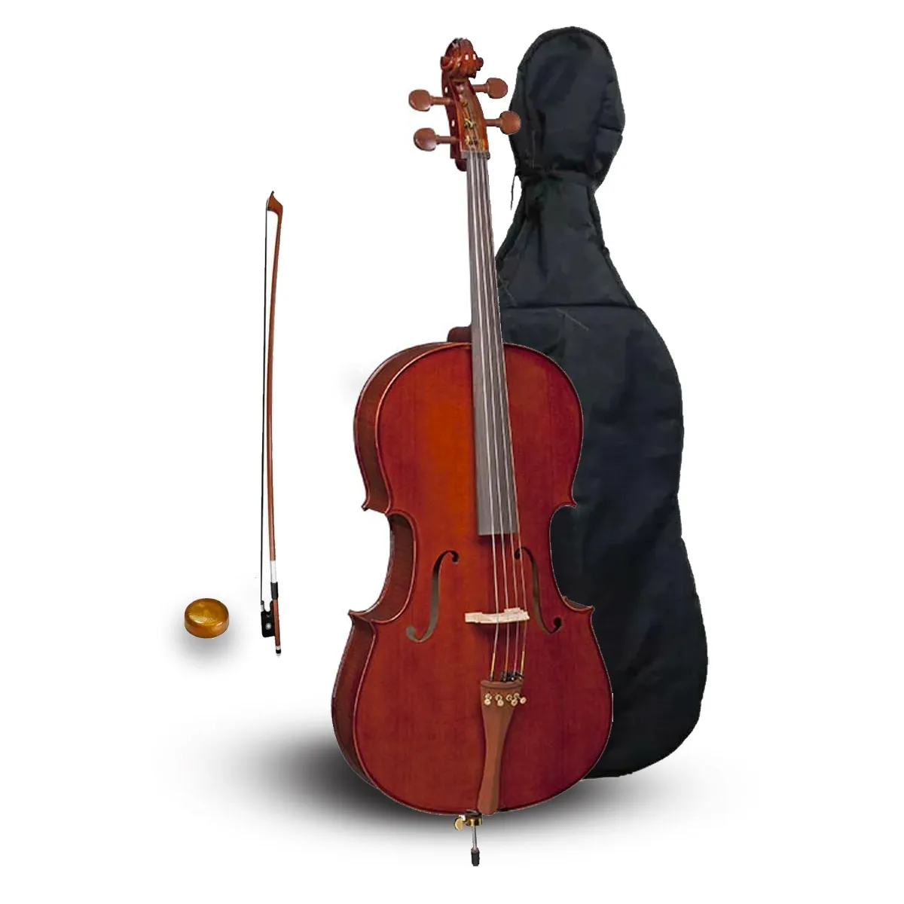

Violinos:
O violino é um instrumento musical de cordas friccionadas, que é tocado com um arco de madeira. É o menor instrumento da família das cordas e o mais agudo.

Veja os violinos aqui.
Violoncelos
O violoncelo é um instrumento musical de cordas que pertence à família dos instrumentos de arco, ao lado do violino, da viola e do contrabaixo. Ele é tocado com um arco, que é passado sobre as cordas para produzir o som. O violoncelo é maior que a viola e o violino, mas menor que o contrabaixo, o que lhe confere um som profundo e ressonante, com uma gama de notas que vai desde o grave até o agudo.
